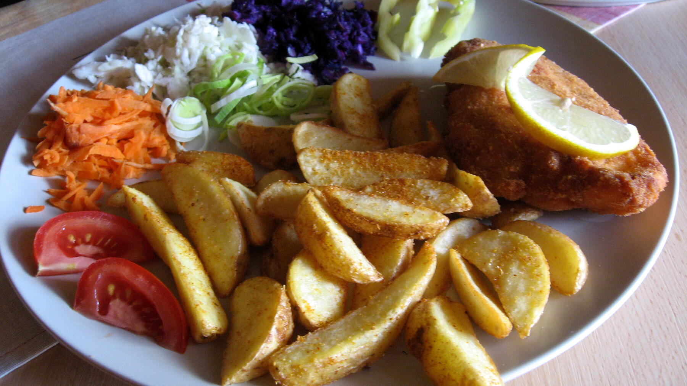

Zurück zur Übersicht
Hähnchenschnitzel mit Currydip, Karottensalat und Kartoffelecken
Knusprige Panko-Schnitzel aus der Pfanne, dazu Ofenkartoffeln, Karotten-Dill-Salat und ein Joghurt-Curry-Dip.
- Zeit
- 40 Min.
- Schwierigkeit
- mittel
- Kategorie
- Klassiker
- Ernährung
- mit Fleisch
Zutaten
Portionen
- 250 gHähnchenbrustfilet
- 68 mlMayonnaise
- 50 gPanko-Mehl
- 2 gPaprikapulver
- 600 gVorwiegend festkochende Kartoffeln
- 4 gCurrypulver
- 150 gJoghurt
- 10 gDill
- 1Karotte
- 1lila Karotte
- 8 gBlütenhonig
- 25 gMehl
- Öl, Salz, Pfeffer
Zubereitung
- Den Backofen auf 220 °C Ober-/Unterhitze (200 °C Umluft) vorheizen. Die Kartoffeln nach Belieben schälen und vierteln, auf einem mit Backpapier belegten Blech mit 1 EL Öl und etwas Salz mischen und 25–30 Minuten goldbraun backen.
- Die Hähnchenbrustfilets flach auf das Brett legen und waagerecht halbieren, sodass kleine, flache Schnitzel entstehen.
- Drei tiefe Teller vorbereiten: auf dem ersten das Mehl, auf dem zweiten das Paprikapulver mit der Hälfte der Mayonnaise verrührt, auf dem dritten das Panko-Mehl.
- Die Schnitzel erst im Mehl wenden, dann gründlich mit der Paprika-Mayonnaise bestreichen und zuletzt rundherum im Panko-Mehl wälzen und gut andrücken.
- 2 EL Öl in einer großen Pfanne erhitzen und die Schnitzel etwa 2 Minuten je Seite goldbraun braten. Danach neben die Kartoffeln aufs Blech legen und 12–14 Minuten mitbacken, bis sie innen nicht mehr rosa sind.
- Für den Salat den Dill fein hacken und in einer großen Schüssel mit dem Honig und der Hälfte des Joghurts verrühren. Die Karotten schälen, hineinraspeln, alles vermengen und mit Salz und Pfeffer abschmecken.
- Für den Dip den restlichen Joghurt mit der restlichen Mayonnaise und dem Currypulver verrühren und mit Salz und Pfeffer abschmecken.
- Kartoffeln und Schnitzel auf Tellern anrichten und Salat und Dip dazu reichen.
Mengen: Für 3 Portionen: 375 g Hähnchen, 102 ml Mayonnaise, 100 g Panko, 800 g Kartoffeln, 200 g Joghurt. Für 4 Portionen: 500 g Hähnchen, 136 ml Mayonnaise, 100 g Panko, 1200 g Kartoffeln, 300 g Joghurt. Der Portionsrechner rechnet einfach hoch und weicht deshalb etwas ab.